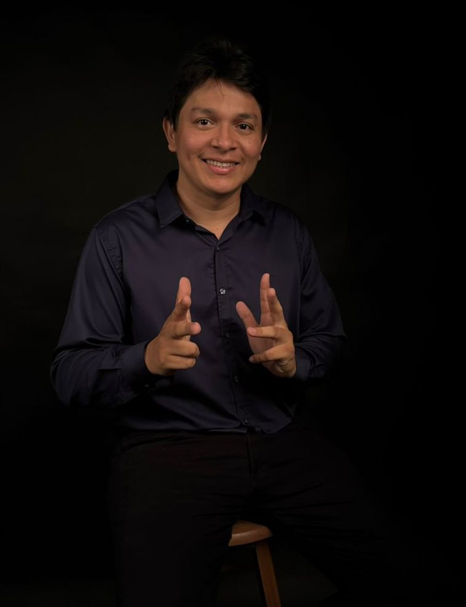
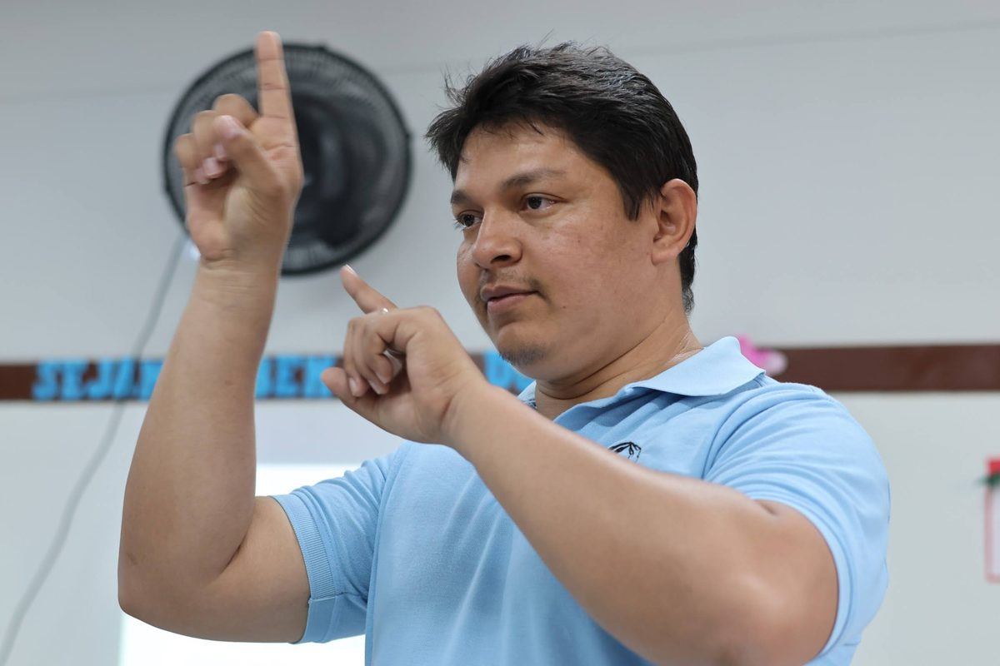
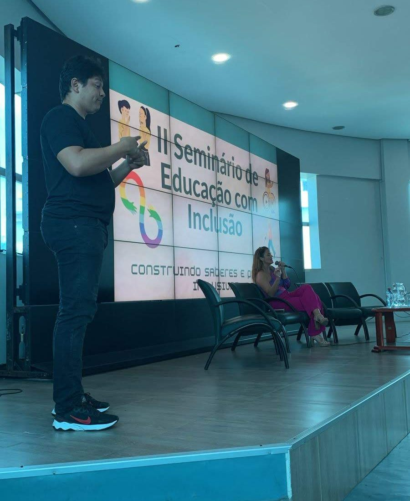
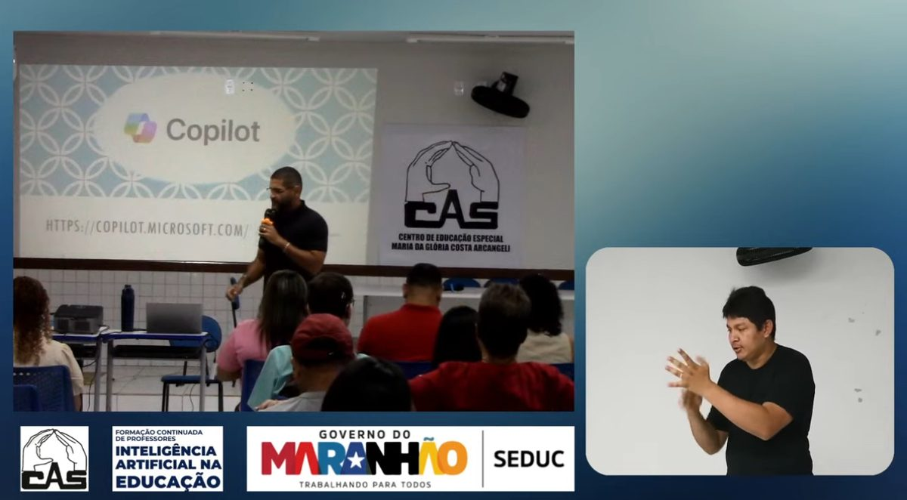
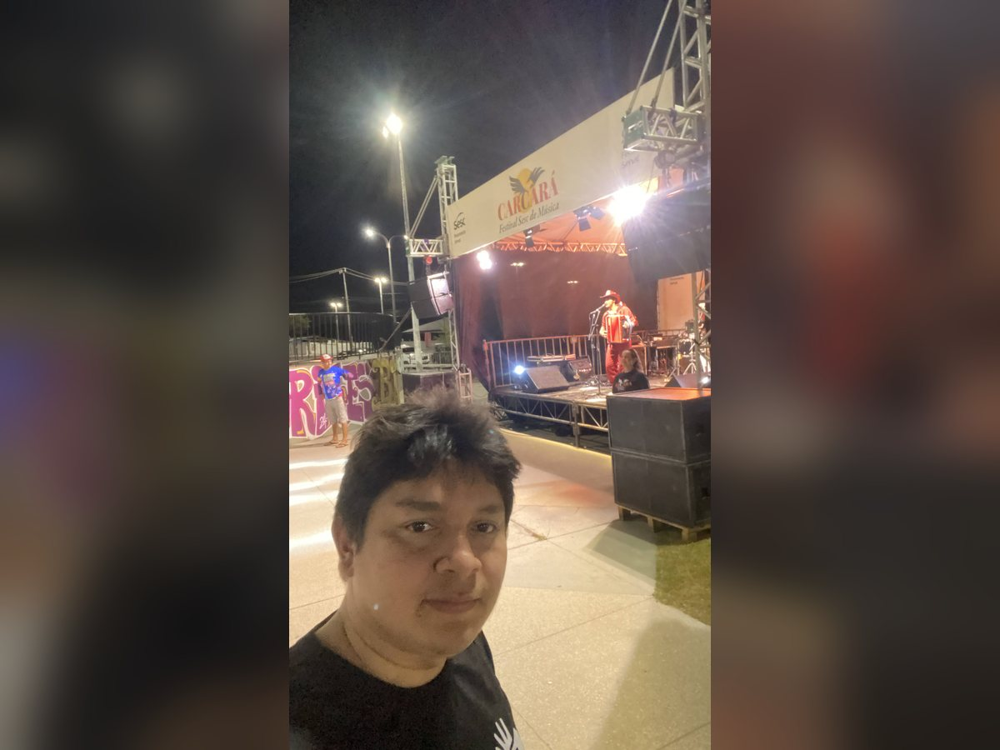
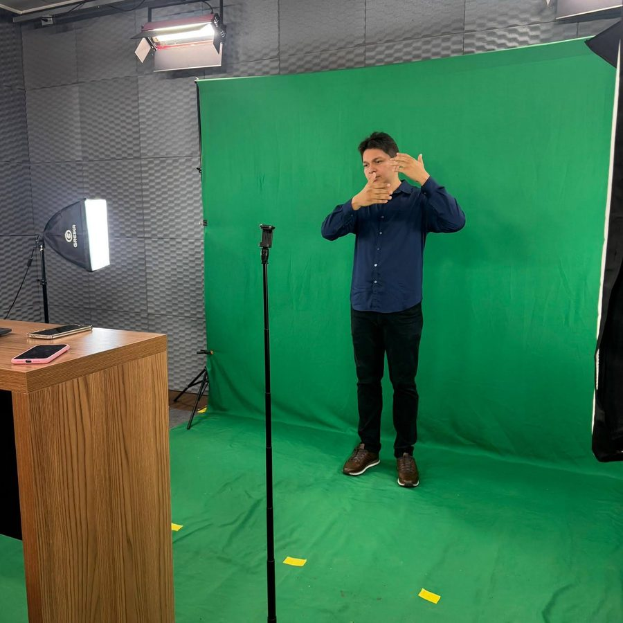
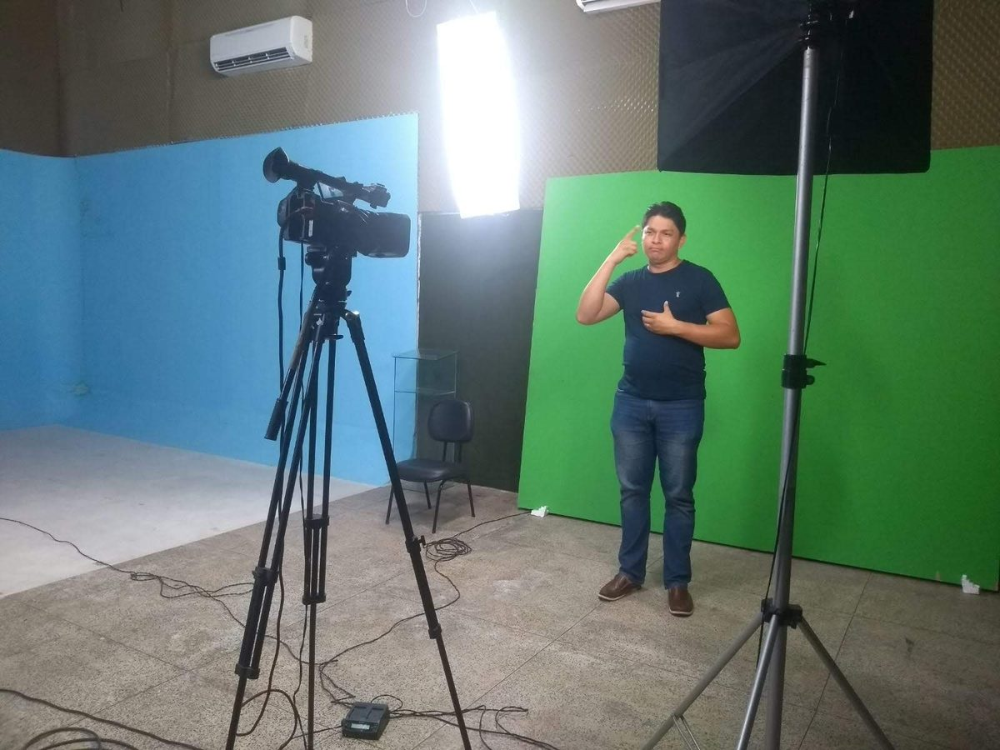
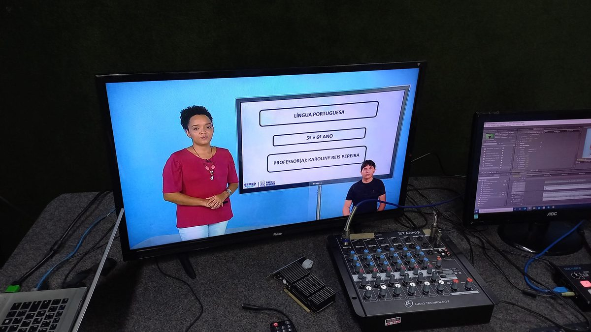
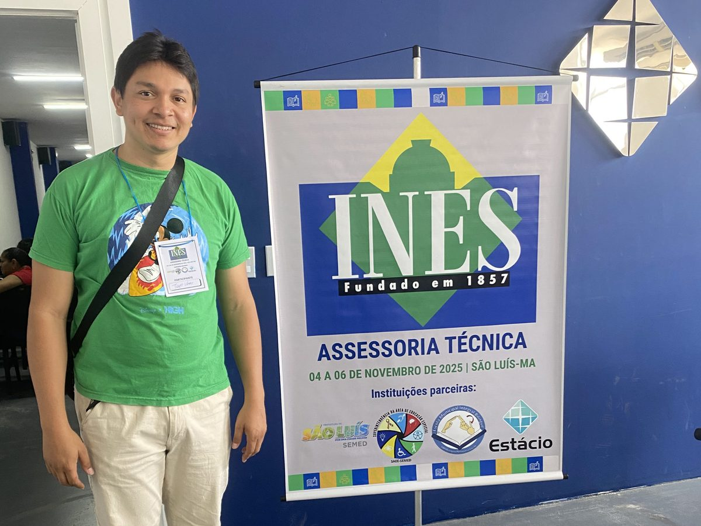
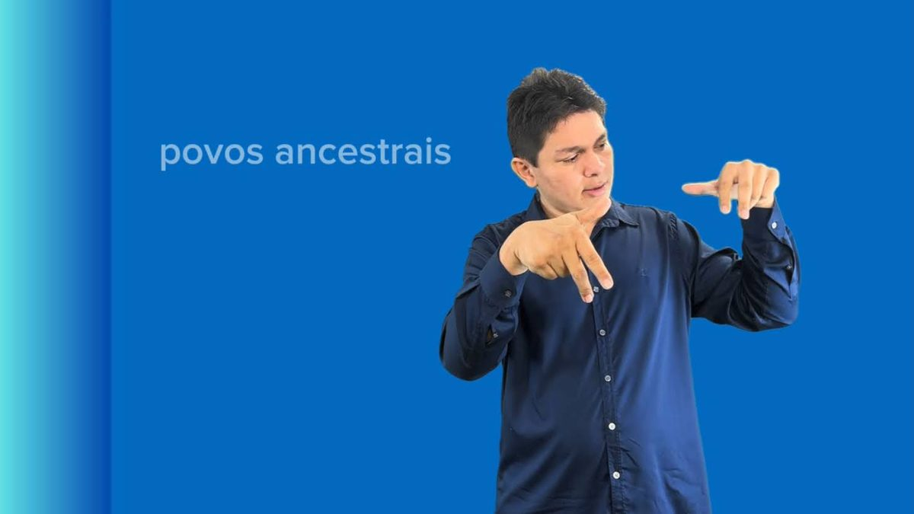

Interpretação simultânea
Congressos, seminários, palestras, formaturas, lives e transmissões. Atendimento individual ou em dupla, conforme a duração do evento.
Libras · Português · Maranhão
Tradução e interpretação entre a Língua Brasileira de Sinais e o português para eventos, escolas, universidades, audiências e cerimônias. Atuo desde 2010, com o rigor terminológico de quem também pesquisa a língua.

Sobre

Sou intérprete de Libras em São Luís, no Maranhão, e atuo com tradução e interpretação entre a Língua Brasileira de Sinais e o português em contextos educacionais, acadêmicos, institucionais e culturais.
Atuo na área desde 2010. Sou graduado em Letras Libras e mestre em Educação Inclusiva pelo Mestrado Profissional em Educação Inclusiva em Rede (Profei) da Universidade Estadual do Maranhão, com dissertação defendida em 2026 sobre acessibilidade linguística e estratégias tradutórias em língua de sinais. A pesquisa gerou um material paradidático bilíngue de História do Maranhão, com videotextos em Libras aplicados em escolas da rede municipal de Paço do Lumiar.
Interpretar é mobilizar competência tradutória — e ela não se sustenta sem convivência com a comunidade surda.
O domínio das duas línguas, o conhecimento sobre o assunto, o uso de instrumentos de pesquisa e, acima de tudo, a capacidade estratégica de decidir sob pressão de tempo. Nida já apontava que equivalência não é correspondência formal entre palavras e sinais, mas efeito equivalente sobre quem recebe.
Na prática, isso significa preparar terminologia antes do evento, conhecer as variações regionais e, principalmente, trabalhar com consultor surdo para um serviço de qualidade.
Serviços
Atendo São Luís, São José de Ribamar, Paço do Lumiar e Raposa presencialmente, e faço traduções gravadas em vídeo para todo o Brasil.
Congressos, seminários, palestras, formaturas, lives e transmissões. Atendimento individual ou em dupla, conforme a duração do evento.
Sala de aula na educação básica e no ensino superior, provas, bancas e defesas de trabalhos.
Videoaulas, campanhas institucionais, materiais didáticos e conteúdo de redes sociais.
Reuniões, atendimentos ao público, audiências e consultas com acessibilidade garantida.
Cultos, missas, celebrações e casamentos.
Oficinas sobre Libras, acessibilidade linguística e terminologia para equipes escolares e instituições.
Como contratar
Atuação
Do palco de seminário ao estúdio de chroma key, cada contexto exige uma preparação diferente.







Publicações
Mestrado Profissional em Educação Inclusiva em Rede (Profei), Universidade Estadual do Maranhão. Orientação de Jakson dos Santos Ribeiro.
ISBN 978-65-83124-45-6 · Acesso aberto · doi.org/10.58871/06876
Como tecnologias emergentes — IA, cidades inteligentes e internet das coisas — podem promover ou excluir pessoas com deficiência. ISBN 978-65-84149-14-4.
Estratégias tradutórias diante de experiências extremas e os limites da equivalência entre línguas e culturas. DOI 10.56238/sevened2026.030-023.
Três capítulos — Upaon-Açu, Herança Africana e Herança Portuguesa — com videotextos em Libras acessíveis por QR Code.

Contato
Envie a data, o local, a duração e o tema do evento. Respondo com orçamento e disponibilidade.